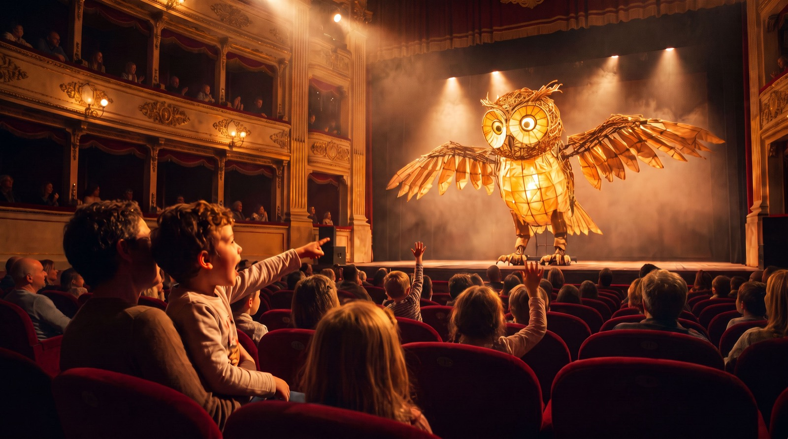

I luoghi della storia, decisi prima di tutto il resto.
Passaggio 1 di 4
Definizione narrativa
Prima si decide la storia. Il Brain Creativo trasforma il brief in una regia: personaggio, tono, struttura.

ENUn sistema AI con un archivio che cresce a ogni lavoro approvato e un processo fisso. I team che seguiamo lo usano dal giorno dopo, senza competenze tecniche.
Prima si decide la storia. Il Brain Creativo trasforma il brief in una regia: personaggio, tono, struttura.
Poi si fissa l’aspetto. Le immagini chiave bloccano luoghi, luci e volto, così il protagonista resta lo stesso in ogni scena.
Solo ora arrivano movimento, suono e montaggio, partendo da ciò che è già deciso.
Ogni lavoro passa da un controllo finale. Ciò che viene approvato entra nell’archivio, e il lavoro dopo parte da lì.
Quattro passaggi, un esempio: il tuo si progetta con il tuo team.


Esempi creati da noi con AI, Napoli compresa.
Quale produzione proviamo insieme?
Lo portiamo nel tuo team, passo dopo passo.
info@vedeasy.com
Ultimo aggiornamento: 13 novembre 2026.
Il titolare del trattamento è Vedeasy di Castronovo Giuseppe, Via Aosta 4, 20155 Milano, C.F.: CSTGPP76D15G273A, P.IVA: 03124310842. Per qualsiasi domanda scrivi a info@vedeasy.com.
Raccogliamo dati personali solo quando ci scrivi dal modulo di contatto: nome, cognome, indirizzo email, numero di telefono, ruolo e azienda. Se poi prenoti una call, nella pagina di prenotazione puoi aggiungere altre informazioni, per esempio una nota.
Non c’è registrazione, non c’è newsletter e non raccogliamo dati di navigazione per fare statistiche o pubblicità. Come ogni sito, il server che ospita questa pagina registra in automatico alcuni dati tecnici delle visite, come indirizzo IP, data e ora, per tenere il sito sicuro e funzionante.
Non usiamo i tuoi dati per inviarti pubblicità e non li usiamo per profilarti. Non li vendiamo.
Le call si prenotano su Cal.com, un servizio esterno. Quando invii il modulo passi alla sua pagina, nella stessa scheda, dove il nome, l’email e le note che hai scritto arrivano già compilati. Da quel momento i dati della prenotazione sono trattati anche da quel servizio, per fissare l’appuntamento e mandarti la conferma, secondo la sua informativa.
Li vediamo noi. Ci aiutano alcuni fornitori: chi ospita questa pagina e la posta elettronica di Vedeasy, e il servizio di prenotazione. Non comunichiamo i dati ad altri, salvo obblighi di legge.
Per il tempo necessario a rispondere e a gestire la tua richiesta. Se non nasce un rapporto di lavoro, li cancelliamo entro 12 mesi. Se nasce un rapporto, li teniamo per tutta la sua durata e per i tempi che la legge richiede per gli obblighi fiscali e contabili. I dati tecnici del server si conservano per un periodo breve, stabilito dal fornitore di hosting.
Puoi chiederci in ogni momento di accedere ai tuoi dati, correggerli, cancellarli, limitarne l’uso, opporti al trattamento o riceverli in un formato leggibile (dall’art. 15 all’art. 22 del Regolamento). Scrivi a info@vedeasy.com. Se pensi che i tuoi diritti non siano rispettati puoi fare reclamo al Garante per la protezione dei dati personali (garanteprivacy.it).
Questa pagina non usa cookie di profilazione, non usa cookie per le statistiche e non carica strumenti di terze parti per misurare le visite o fare pubblicità. Non ci sono Google Analytics, Google Tag Manager, pixel di Meta o remarketing.
I caratteri e i video sono ospitati da noi, sulla stessa pagina, senza chiamare servizi esterni. Per questo non c’è un banner dei cookie: non c’è nulla da accettare o rifiutare. Possono essere usati solo strumenti tecnici necessari al funzionamento della pagina, che non richiedono consenso.
Quando passi alla pagina di prenotazione, quel servizio può usare i propri cookie: i dettagli sono nella sua informativa.
Se cambia qualcosa, per esempio se aggiungiamo uno strumento di statistiche, aggiorniamo questa pagina e la data in alto.